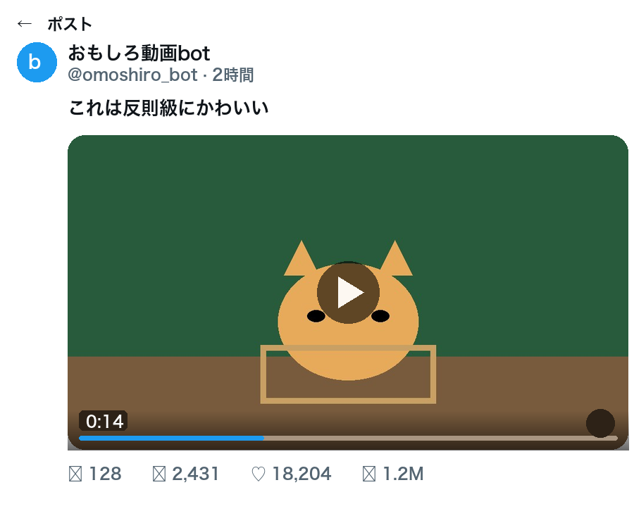

| 確認項目 | 結果 |
|---|---|
| ケースA:曲名なしキャプション「見て損はない、伝説の一本」 | キャプション検索は的外れになりがち→画像検索は1位で正解(dQw4w9WgXcQ) |
| ケースB:固有名詞なしキャプション「これは笑う、オレンジ猫の日常」 | キャプション検索は0件→画像検索は1位で正解(kAjQN9f5Kck) |
| 2026-10-04時点、正解2本の生存確認(oEmbed実測) | 2本とも HTTP 200・再生可能タイトル取得 |
| UI除去パイプラインの動作確認(本日新規生成のサンプルで実行) | ヘッダー・本文・下部バーを除去し動画のコマだけ抽出成功 |